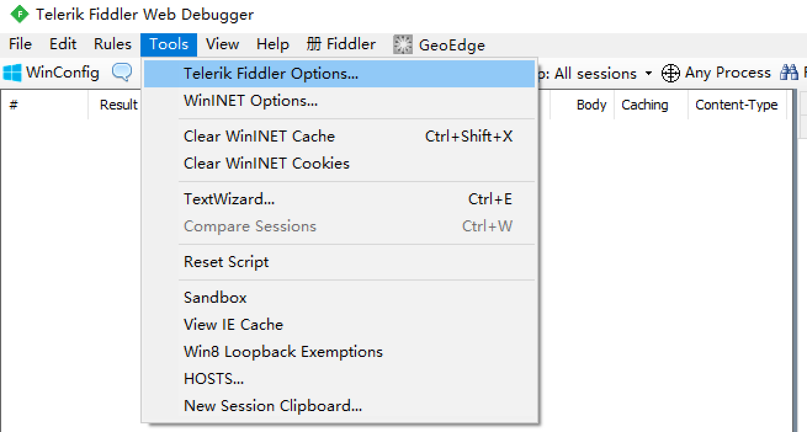
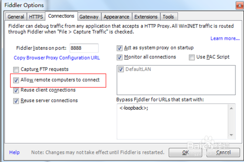
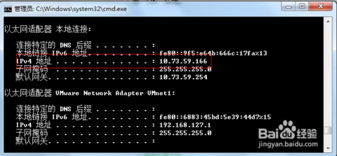
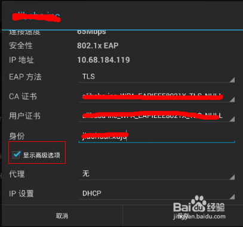
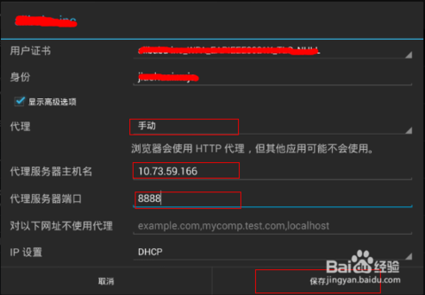

通过Fiddler进行手机抓包
通过Fiddler抓包工具，可以抓取手机的网络通信，但前提是手机和电脑处于同一局域网内（WI-FI或热点），然后进行以下设置：
用Fiddler对Android应用进行抓包
打开Fiddler设置

在
Connections里设置允许连接远程计算机，确认后重新启动Fiddler 
在命令提示符下输入
ipconfig查看本机IP 打开Android设备的“设置”->“WLAN”，找到你要连接的网络，在上面长按，然后选择“修改网络”，弹出网络设置对话框，然后勾选“显示高级选项”。 
在“代理”后面的输入框选择“手动”，在“代理服务器主机名”后面的输入框输入电脑的ip地址，在“代理服务器端口”后面的输入框输入8888，然后点击“保存”按钮。 
启动Android设备中的浏览器，访问网页即可在Fiddler中可以看到完成的请求和响应数据。
用Fiddler对iPhone手机应用进行抓包
基本流程差不多，只是手机设置不太一样：
iPhone手机：点击设置 > 无线局域网 > 无线网络 > HTTP代理 > 手动：
代理地址(电脑IP)：192.168.xx.xxx
端口号：8888